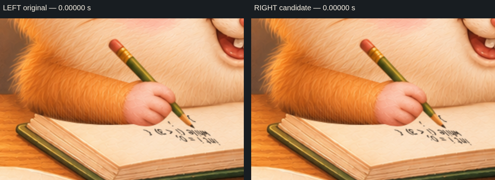
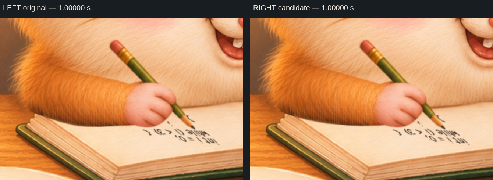
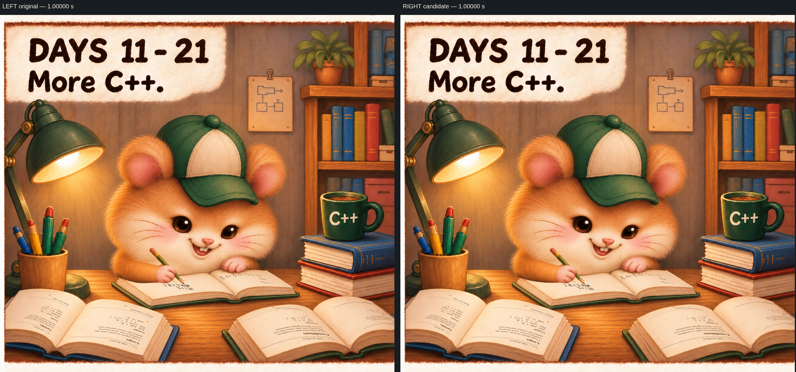
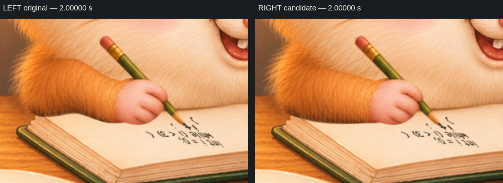
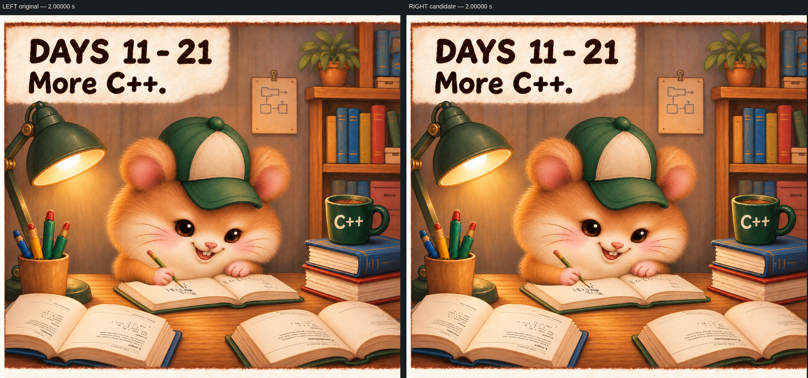
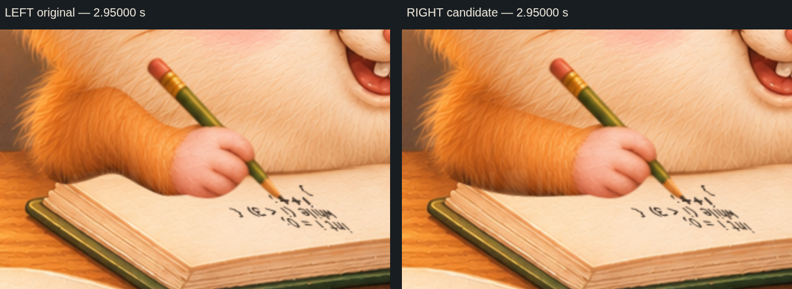
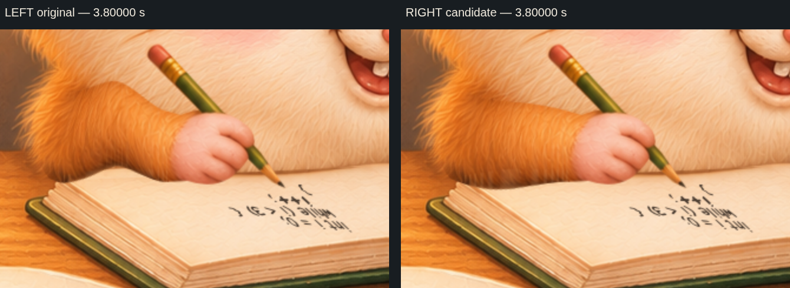
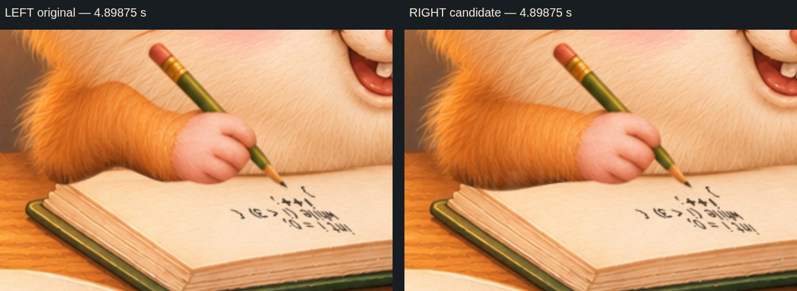
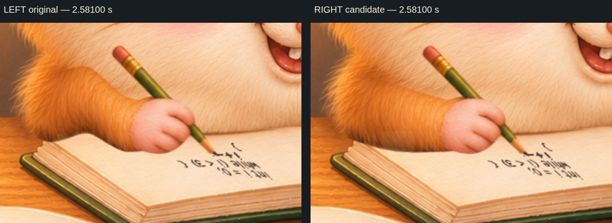
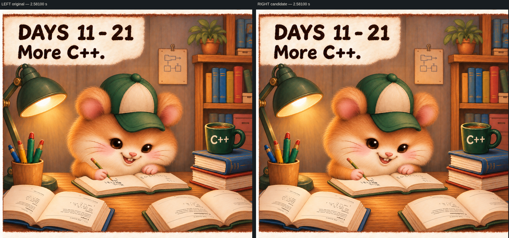

左：现有原版；右：取消额外上拱候选。完整场景 PNG 保留原始像素；局部从原场景 (350,750,330,220) 裁切后放大至 660×440（200%）。点击图片查看原尺寸。每次通过 motionCompare.draw(t) 设置并确认两个子页面 time 相等，再等待两帧渲染。
pose 扫描发现候选水平位移最小值在 2.58100 s，dx=-24.300 px。它只用于选择额外检查时间，不作为视觉合格依据。
这是截图观察排名；4.89875秒与3.8秒姿态高度接近。完整分析见诊断报告。









